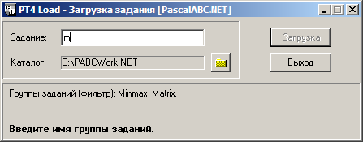
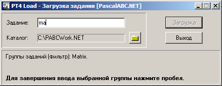
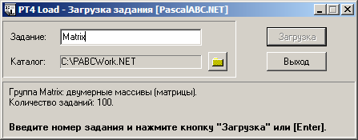

Входящий в состав задачника Programming Taskbook программный модуль PT4Load позволяет быстро
создавать программы-заготовки для выполнения требуемого задания. Этот модуль можно
вызвать непосредственно из среды PascalABC.NET командой
меню «Модули | Создать шаблон программы» (с данной командой связана также
кнопка  и клавиатурная
комбинация Shift+Ctrl+L).
и клавиатурная
комбинация Shift+Ctrl+L).
При запуске данного модуля появляется окно, в котором требуется указать имя задания (в нижней части окна отображаются имена всех имеющихся групп заданий).
При вводе допустимого
имени задания (то есть имени группы и порядкового номера, например, Begin1)
кнопка «Загрузка» становится доступной, и после ее нажатия (или нажатия клавиши Enter)
в рабочем каталоге создается
файл, содержащий шаблон программы для выполнения выбранного задания (имя файла совпадает с именем задания).
Созданная программа-шаблон сразу загружается в редактор PascalABC.NET; ее можно немедленно запустить, чтобы
увидеть формулировку задания и пример исходных данных.
Приведем пример шаблона, созданного для задания Begin3 (этот шаблон будет записан в файл Begin3.pas):
uses PT4;
begin
Task('Begin3');
end.
Ввод имени задания для исполнителей Робот и Чертежник имеет следующую особенность: для них надо вначале
ввести префикс исполнителя (RB для Робота или DM для Чертежника),
после чего ввести имя набора заданий
для соответствующего исполнителя и номер этого задания (например, RBa1).
Если введено имя задания, для которого уже имеется файл с программой, то именно этот файл и будет загружен в редактор.
Особая группа PAS (последняя в списке групп заданий) позволяет загрузить в редактор
любой файл с расширением .pas из рабочего каталога. При вводе имени этой группы и нажатии
кнопки «Загрузка» появляется список
всех pas-файлов; после выбора любого из этих файлов он немедленно загружается в редактор.
Таким образом, использование группы PAS равносильно команде «Файл | Открыть».
В версии 4.11 задачника появилась возможность фильтрации групп в процессе ввода их названий. Фильтрация производится по уже введенным символам. Например, при вводе первого символа «m» в списке возможных групп останутся только группы, имена которых начинаются с этого символа; при этом перед списком отфильтрованных групп будет выведен текст «(фильтр)»:

Как только в списке останется единственный вариант, будет выведена подсказка о том, что для завершения ввода имени данной группы достаточно нажать пробел:
После нажатия пробела произойдет автоматическое дополнение введенной части имени группы:
